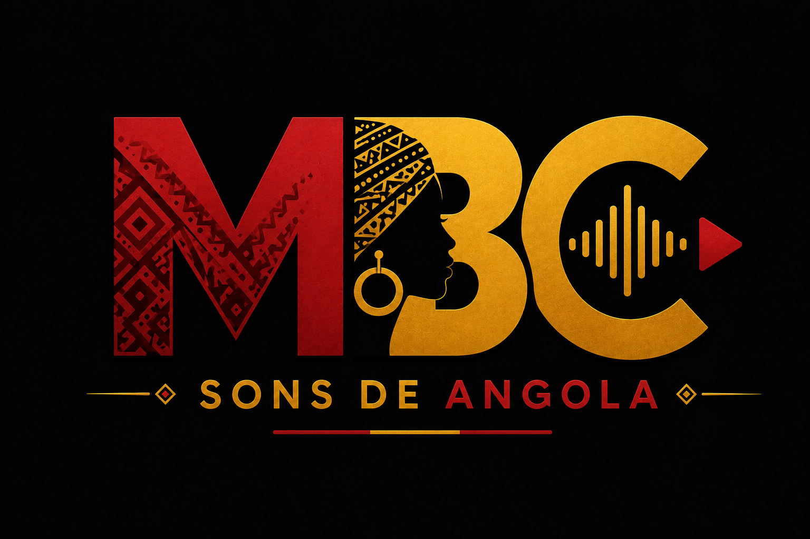

Assigning critical modules without losing the plot
A practical guide to mapping technical modules to the right team, location, and complexity level.
Stories and playbooks on distributing engineering work across international teams.

Inside MBC — Sons de Angola: the music streaming platform that split its engineering across five countries with Orquestra, cutting bandwidth costs by 38% and eliminating buffering breaks.
A practical guide to mapping technical modules to the right team, location, and complexity level.
Turning real hours and cost into a report your finance team and your engineers both trust.
How distributed teams stay in sync without forcing anyone into a 3 a.m. call.